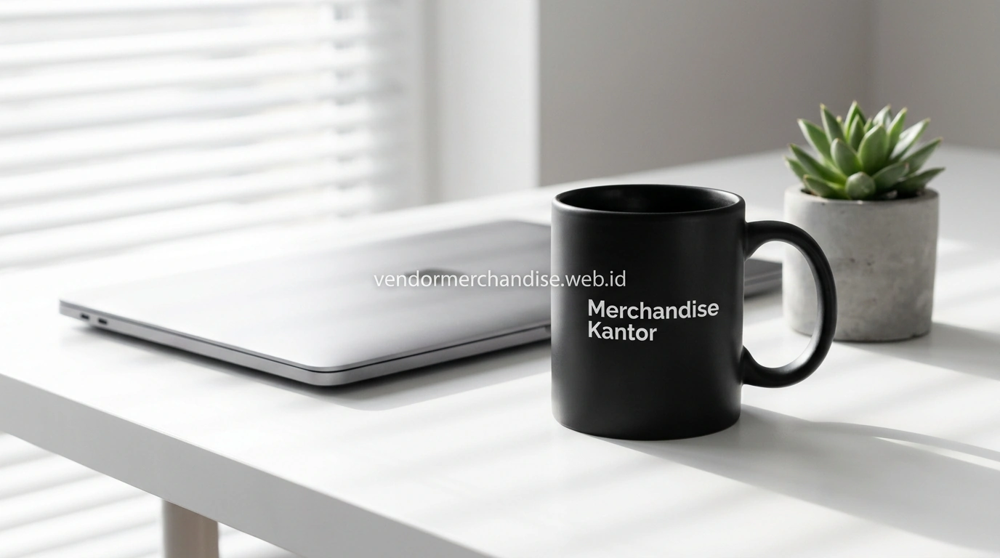

Mengapa Mug Menjadi Pilihan Populer sebagai Corporate Gift?
Mug menjadi pilihan populer sebagai corporate gift karena kesan yang diberikan cenderung personal dan hangat, sehingga sering digunakan sebagai bentuk apresiasi kepada klien, mitra bisnis, maupun karyawan pada berbagai momen tertentu di lingkungan kerja.
Selain nilai personalnya, mug juga termasuk barang yang digunakan berulang di meja kerja atau area dapur kantor, sehingga logo perusahaan pada mug berpotensi terlihat oleh penerima maupun orang di sekitarnya dalam aktivitas sehari-hari.
Mug untuk Kebutuhan Merchandise Kantor Sehari-hari
Mug custom logo sering digunakan sebagai merchandise kantor yang dibagikan kepada karyawan untuk kebutuhan sehari-hari, baik sebagai bagian dari welcoming kit karyawan baru maupun sebagai merchandise apresiasi pada momen tertentu di perusahaan.

Desain mug untuk kebutuhan internal biasanya dibuat dengan warna dan logo yang konsisten dengan identitas visual perusahaan, agar tetap terlihat rapi saat digunakan di lingkungan kerja.
Mug untuk Promosi dan Seminar Perusahaan
Mug custom logo juga digunakan sebagai merchandise promosi maupun souvenir pada acara seminar, terutama untuk seminar yang diselenggarakan di ruangan tertutup dengan fasilitas area minum bagi peserta selama sesi berlangsung.
Kombinasi mug dengan kemasan box sederhana sering dipilih agar tampilan merchandise terlihat lebih menarik saat dibagikan kepada peserta atau tamu undangan.
Mug sebagai Corporate Gift untuk Klien dan Mitra Bisnis
Mug custom logo banyak dipilih sebagai corporate gift karena dapat dipersonalisasi dengan nama penerima atau pesan khusus, sehingga kesan yang diberikan terasa lebih personal dibanding merchandise umum yang dibagikan dalam jumlah besar tanpa personalisasi.
Beberapa kebutuhan corporate gift yang umum menggunakan mug sebagai merchandise:
- Hadiah akhir tahun untuk klien dan mitra bisnis
- Merchandise apresiasi untuk karyawan berprestasi
- Souvenir pada acara anniversary perusahaan
- Pelengkap gift set bersama merchandise lain seperti notebook atau tumbler
Bagaimana Cara Memesan Mug Merchandise Custom dalam Jumlah Besar?
Pemesanan mug merchandise custom dalam jumlah besar di Merchandise Kantor dimulai dari konsultasi kebutuhan, pemilihan bahan dan warna, approval desain, hingga proses produksi yang disesuaikan jadwal penggunaan.
Tahapan umum yang dapat diikuti:
- Tentukan kebutuhan penggunaan mug, misalnya corporate gift, merchandise kantor, atau promosi
- Pilih bahan dan warna mug sesuai anggaran dan target penerima
- Kirim logo atau elemen personalisasi untuk proses mock up desain
- Approval desain sebelum produksi dimulai
- Produksi dan quality control sebelum pengemasan dan pengiriman
Jelajahi pilihan mug keramik custom logo serta panduan merchandise seminar kit untuk perusahaan dan instansi untuk melengkapi kebutuhan suvenir perusahaan Anda.
"Cangkir mug berkualitas tinggi dengan cetak logo yang awet adalah teman setia di setiap jeda kopi kerja rekan bisnis Anda."
— Erlang Sinatrya, Penulis Merchandise Kantor

Pesan Mug Merchandise Sekarang di Merchandise Kantor
Merchandise Kantor siap membantu perusahaan menyiapkan mug merchandise custom logo untuk kebutuhan corporate gift, merchandise kantor, hingga promosi dengan proses pemesanan yang cepat dan hasil produksi berkualitas. Hubungi tim Merchandise Kantor sekarang untuk konsultasi produk dan estimasi harga sesuai kebutuhan mug perusahaan Anda.